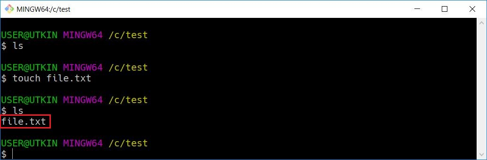

UNIX shell
1.1 Listing files in the directory
ls
1.2 Listing files in the directory
ls -a
1.3 Listing files in the directory
ls -alt
2 Show current directory
pwd
3.1 Moving into a directory
cd {path}/{directory name}
3.2 Moving into home directory
cd [Enter]
4 Make a directory
mkdir {directory name}
5 Make a file
touch {file name}

6.1 Remove a file
rm {file name}
6.2 Remove a directory
rm -r {directory name}
6.3 Delete directories with subdirectories
rm -r {folder}
7 Copy a file
copy {source/file} {destination}
8.1 Move a file
mv {source}{file name} {destination}
8.2 Rename a file
mv {old file name} {new file name}
10 Lunch an application
Just type the name of the application with {file name}
11 Edit file
nano {file name}
12 How to know about installed processor
winsat cpu -v

13 A part of commands are available in the help
Thank you!